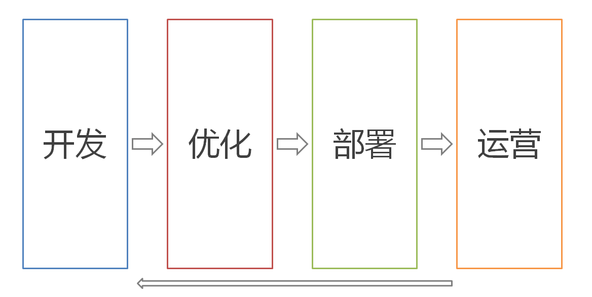
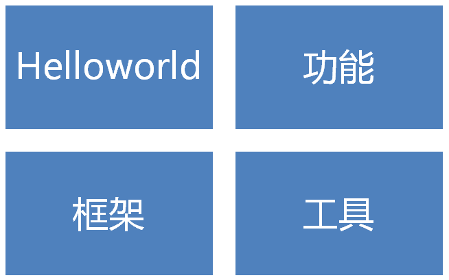
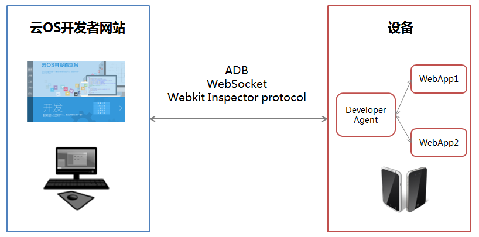
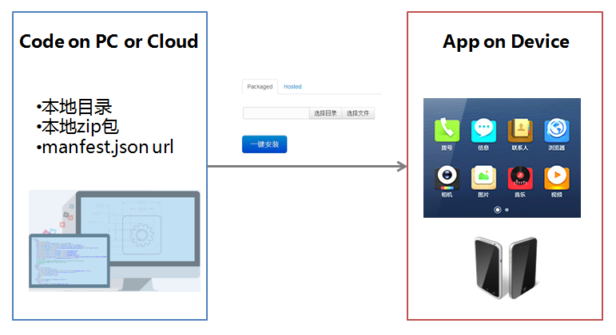
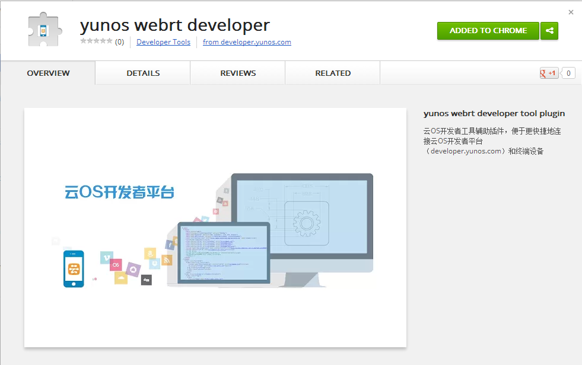
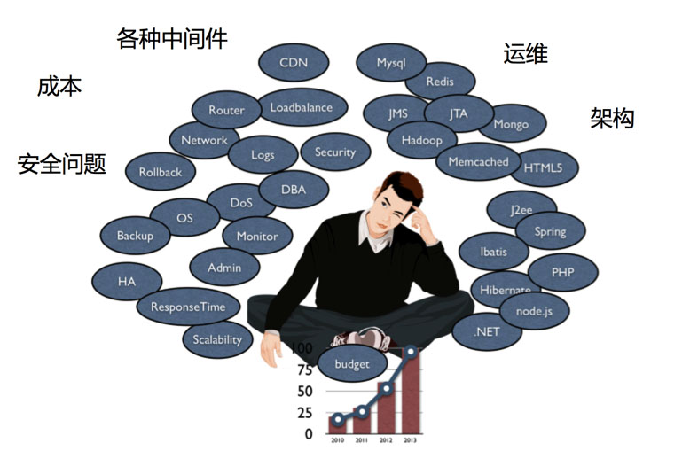
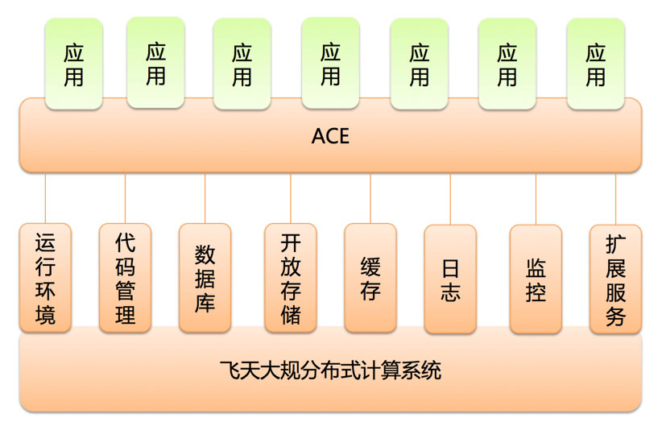
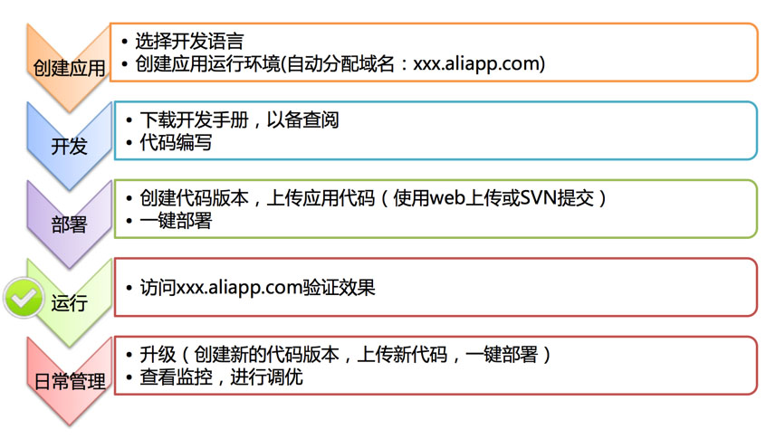

WebApp开发实践
基于云OS开发WebApp更畅快
Created by 云OS开发者平台

Agenda
开发
开发 · Helloworld
一个简单WebApp的代码结构

WebApp的定义者：manifest.json
{
"name": "Helloworld",
"version": "1.0.0",
"type": "web",
"package": "com.yunos.samples.helloworld",
"version_code": 1,
"minimum_runtime_version": "0.0.1",
"description": "a simple WebApp sample code",
"icons": {
"36": "/style/icons/36/icon-36.png",
"48": "/style/icons/48/icon-48.png",
"72": "/style/icons/72/icon-72.png",
"96": "/style/icons/96/icon-96.png"
},
"developer": {
"name": "yunos",
"url": "http://www.yunos.com"
},
"appcache": "helloworld.appcache",
"launch_url": "http://webrt-helloworld.aliapp.com/index.html",
"locales": {
"en": {
"name": "Helloworld",
"description": "a simple WebApp sample code",
"developer": {
"name": "NG-WebOS",
"url": "http://www.yunos.com/"
}
},
"zh-rCN": {
"name": "Helloworld",
"description": "一个简单的WebApp代码实例",
"developer": {
"name": "NG-WebOS",
"url": "http://www.yunos.com/"
}
}
},
"fullscreen": "true",
"platform": "phone",
"permissions": {
"geolocation": {}
}
}
Packaged VS Hosted
开发 · 功能
支持H5的云OS能为开发者带来什么？
云OS特有API
- 发送Intent或广播调用其他App，比如启动或关闭应用
- 应用安装、卸载、载入列表等管理功能
- 通知中心
- 通用的数据提供和访问服务
- 实时数据push服务
- 集成支付、广告等云服务
- ......

- 与Web Runtime融为一体
- 启动HTTP、WebSocket等网络服务
- 访问文件系统
- 第三方module
- ......
开发 · 框架
最丰富的框架和库
- Boilerplate: html5Boilerplate / mobileBoilerplate
- 基础类库: zepto / jQuery / Underscore
- 功能类库: Hammer.js / swipe.js / fastclick.js
- 模块化: requireJs / seaJs(支付宝)
- MVC框架: Backbone.js / Spine.js / Angular.js / Ember.js
- UI框架: sencha Touch / jQuery mobile / jQ Touch
开发 · 工具
云OS开发者平台架构
一站式的WebApp开发体验
一键安装工具
调试工具

连接工具
时刻保证手机连接
性能
Mark Zuckerberg: Our Biggest Mistake Was Betting Too Much On HTML5
性能
fastbook!
性能优化
绘制原则
- 快速绘制
- 避免意外绘制
- 完全不绘制
快速绘制
css3 expensive styles
- box shadow
- gradient
- background size
- ……
YUNOS DEV TOOLS:continues page repaint
CSS3 please!
使用css 3 animation && transition 来做动画
开启硬件加速:
transform: translateZ(0); 或 transform: translate3d(0, 0, 0);
A
L
I
B
A
B
A
Y
U
N
O
S
避免意外绘制
Hello World
YUNOS DEV TOOLS:Show paint rectangles
完全不绘制
layer model
任何移动都不会引起重绘
适合要做变换的静态内容
动画和layer
layer
YUNOS DEV TOOLS:Show composited layer borders
滚动和layer


layer的生成
- 3d transform
- video标签
- canvas标签
- ……
last but not least
关注电量
性能越差，耗电量越大
部署
互联网应用开发的痛
ACE是什么
- 是一个托管环境
- 是一个网络应用托管环境
- 是一个可弹性扩展的网络应用托管环境
ACE（Alibaba Cloud Engine，云引擎）
ACE初窥
有哪些特点
- 无一次性投入成本
- 无需搭建环境，无需运维
- 使用简单，技术门槛低
- 根据访问冷热弹性伸缩占用的资源
- 提供扩展服务（分布式Session、缓存服务、定时任务……）
适合什么开发者
- 个人及中小团队、创业团队、站长等互联网应用开发者
-
他们具有以下特点：
- 往往处于初创期或者成长期，资金有限，承受不起巨大的一次性投入。
- 业务常具有增长性、爆发性和突发性等特点，需要高度可伸缩的框架。
- 需要简洁的开发和部署流程，轻量的高度集成化的平台。
如何使用
运营
运营 · 应用中心

运营 · 社区
谢谢大家
Q&A
可以访问http://developer.yunos.com
获得更多本次大赛和开发技术的详细信息